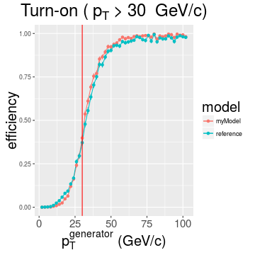
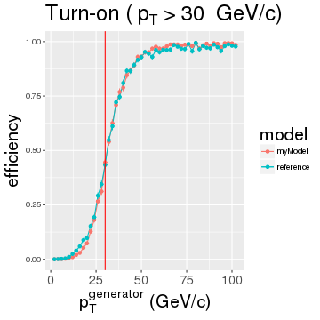

New input data
- numbers and shapes
ROC metric
- rate against efficiency
- examples with various rate assumptions
Model building
- using all predictors
EMTF $p_T$ Regression
Khristian Kotov
Outline
New Monte Carlo simulation data
- Andrew's /store/user/abrinke1/EMTF/MC/SingleMu_Pt1To1000_FlatRandomOneOverPt
- a double muon sample, flat in \(0 < |\eta| < 2.5\) (barrel included)
- about 300\(k\) muons in endcaps extending to \(p_T = 1000~GeV\), flat in \(log(p_T)\)


Turn-on curve
For some threshold see what part of events was accepted in every bin of true pT

ROC curve
Convolute efficiency (or turn-on) with rate and see % of under-the-threshold (false positives) and % of over-the-threshold (true positives) rate accepted for a given threshold
Move threshold and plot false positive vs. true positive rates

Model with all predictors included


Compressing dPhi, dTheta, and theta
Let's leave 5 bits per dPhi, 3 bits per dTheta and theta:


dPhi12, dPhi23, dPhi34, theta, clct1, dTheta12
Error in data.frame(..., check.names = FALSE): arguments imply differing number of rows: 312202, 0